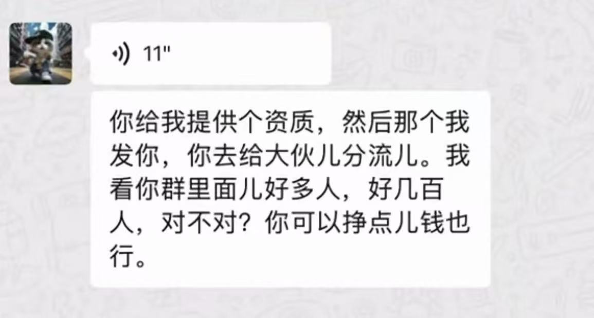

ominous
@UWATCHLIFE
@BAKA__0902 谢绝为自己低劣的倒卖行径洗白，3q2x。搞得ao像恁这种普瑞巴林原粉药商在此次团购前完全隐身似的，本壬随便找个破频道都能找到巨大多10元每克原粉药商，而反观恁造出的不知安全与否的劣质神必混合物甚至卖得比这些药商还贵，我呕呕

不爱我我就去死
@BAKA__0902
得亏某些闹得风风火火的人，现在某些化工厂都知道你们抢着od了，厂家打电话鼓动我朋友去干违法的事情，无敌了哈哈，喜欢闹得这么大 https://t.co/B1j8IGGrO4